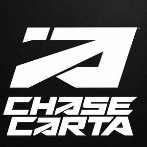

Trade Mark Journal No.2026/006 6 February 2026
UK00004329355 25 January 2026 (14,18,25)

- Class 14
- Jewellery; Necklaces [jewellery]; Brooches [jewellery]; Jewellery brooches; Jewellery, including imitation jewellery and plastic jewellery; Pendants [jewellery]; Bracelets [jewellery]; Jewelry; Fashion jewellery; Gold jewellery; Charms [jewellery]; Charms for jewellery; Jewellery charms; Enamelled jewellery; Costume jewellery; Rings being jewellery; Rings [jewellery]; Jewellery stones; Necklaces [jewelry]; Hat jewellery; Watch winders; Watch dials; Watch straps; Watch bracelets; Watch fobs; Watch faces; Watch boxes; Watch crystals; Watch clasps; Watch bands; Watch crowns; Chains (Watch -); Watch cases; Clock and watch hands; Dials for clock and watch making; Watch boxes [presentation]; Watch glasses; Watch movements; Watch hands; Watch parts; Watch pouches; Brooches [jewellery, jewelry (Am.)]; Ornaments [jewellery]; Amulets being jewellery; Amulets [jewellery]; Pearls [jewellery]; Trinkets [jewellery]; Necklaces [jewellery, jewelry (Am.)]; Lockets [jewellery]; Brooches [jewelry]; Clasps for jewellery; Items of jewellery; Jewellery items; Jewellery chains; Jewellery chain; Fake jewellery; Sterling silver jewellery; Jewellery rope chain for necklaces; Charms [jewelry]; Charms for jewelry; Body costume jewellery.
- Class 18
- Tote bags; Duffel bags; Duffle bags; Bags; Carry-all bags; Grocery tote bags; Drawstring bags; Cross-body bags; Crossbody bags; Carry-on bags; Sling bags; Diaper bags; Toiletry bags; Duffel bags for travel; Bucket bags; Shoulder bags; Luggage bags; Belt bags and hip bags; Nose bags [feed bags]; Bags (Nose -) [feed bags]; Clutch bags; Kit bags; Carrying bags; Nappy bags; Shoe bags; Belt bags; Messenger bags; Cloth bags; Leather bags; Umbrella bags; Canvas bags; Mesh shopping bags; Mesh bags for shopping; Garment bags; Leather shopping bags; Souvenir bags; Tool bags of leather, empty; Canvas shopping bags; Waterproof bags; Toilet bags; Make-up bags; Attaché bags; Makeup bags; Bags [envelopes, pouches] of leather, for packaging; Bags [envelopes, pouches] for packaging of leather; Bags [envelopes, pouches] of leather for packaging; Bum bags; Suit bags; Reusable shopping bags; Hand bags; Bags for clothes; Baby carrying bags; Gym bags; Overnight bags; Courier bags; Leather bags and wallets; Roll bags; Book bags; Nose bags; Wheeled bags; Tool bags, empty; Shoe bags for travel; String bags for shopping; Barrel bags; Travel bags; Bags for travel; Boot bags; Waist bags; Gladstone bags; Cosmetic bags; Camping bags; Towelling bags; All-purpose carrying bags.
- Class 25
- Clothing; Knitwear [clothing]; Jackets [clothing]; Ready-to-wear clothing; Woolen clothing; Furs [clothing]; Layettes [clothing]; Clothing layettes; Garments for protecting clothing; Linen clothing; Headbands [clothing]; Headbands for clothing; Gloves [clothing]; Gloves as clothing; Clothes; Aprons [clothing]; Maternity clothing; Kerchiefs [clothing]; Jerseys [clothing]; Denims [clothing]; Shorts [clothing]; Cashmere clothing; Capes (clothing); Oilskins [clothing]; Gabardines [clothing]; Leather (Clothing of -); Silk clothing; Leather clothing; Clothing of leather; Collars [clothing]; Parts of clothing, footwear and headgear; Knitted clothing; Veils [clothing]; Hoods [clothing]; Windproof clothing; Corsets [clothing, foundation garments]; Embroidered clothing; Wristbands [clothing]; Bandeaux [clothing]; Belts [clothing]; Belts for clothing; Rainproof clothing; Waterproof clothing; Casual clothing; Visors [clothing]; Jackets being sports clothing; Jackets (Stuff -) [clothing]; Stuff jackets [clothing]; Bottoms [clothing]; Playsuits [clothing]; Ready-made clothing; Clothing for leisure wear; Trunks being clothing; Woven clothing; Latex clothing; Infant clothing; Leisure clothing; Clothing for sports; Sports clothing; Ties [clothing]; Drawers [clothing]; Drawers as clothing; Athletic clothing; Clothing for children; Muffs [clothing]; Bodies [clothing]; Clothing for babies; Tops [clothing]; Clothing for infants; Weatherproof clothing; Clothing for cycling; Pockets for clothing; Fabric belts [clothing]; Water-resistant clothing; Triathlon clothing; Handwarmers [clothing]; Clothing for skiing; Beach clothing; Thermal clothing; Chaps (clothing); Cowls [clothing]; Men's clothing; Fishing clothing; Dance clothing; Mitts [clothing]; Braces for clothing.
Jermaine Brookes
Chezerai brookes
Chino Brookes